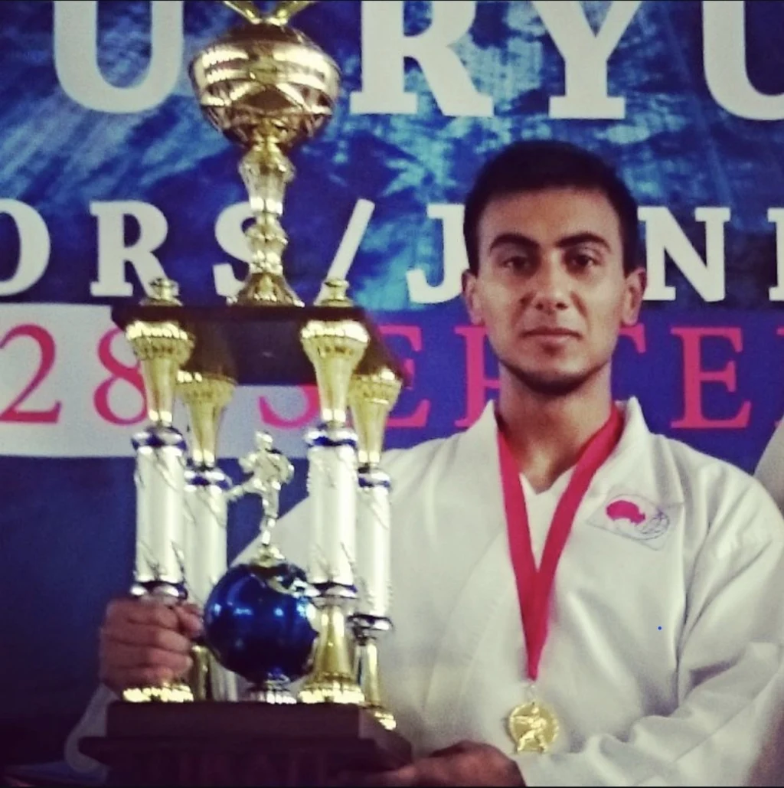
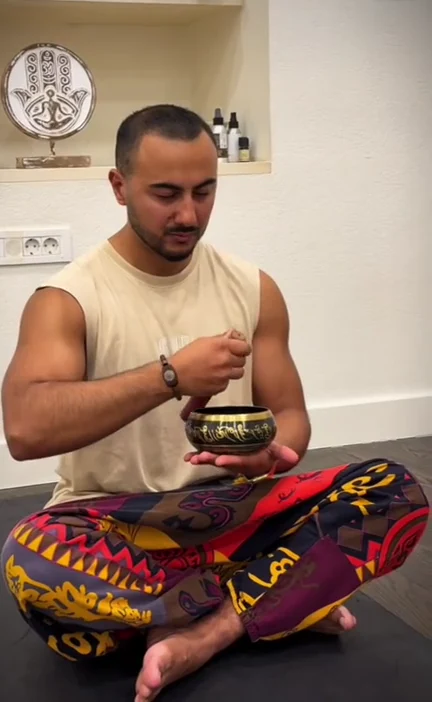
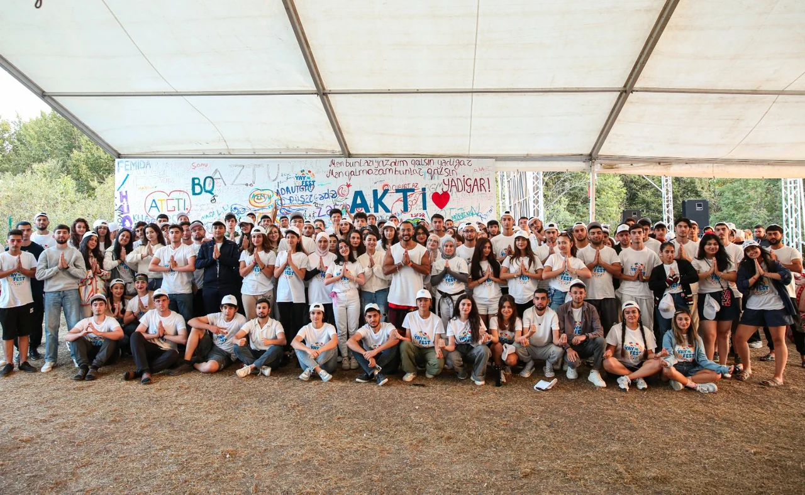
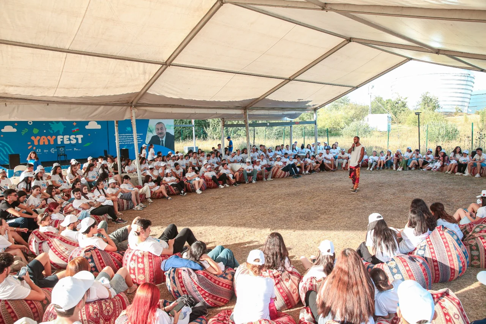
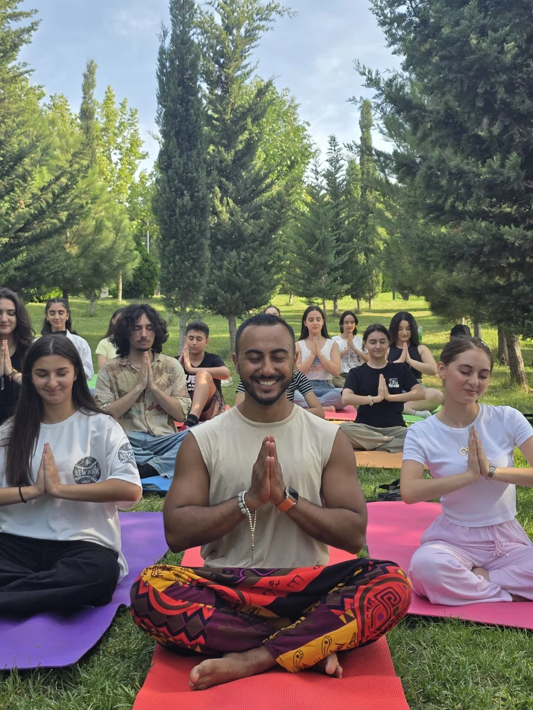

Эльхан Гюльмалыев
Основатель RESTART и преподаватель йоги. В RESTART Эльхан соединяет дисциплину спортивной практики с вниманием к телу и дыханию.

Мастер владения нунчакамиNunçaku ustasıNunchaku practitioner

Чемпион Мира и Европы по каратэ
Каратэ — часть спортивного пути Эльхана. Опыт этой практики лежит в основе его подхода к дисциплине и точности движения.
Преподаватель йоги
В преподавании Эльхан соединяет движение, дыхание и внимание. Он предлагает замечать привычки тела и выбирать темп, в котором движения остаются осознанными и управляемыми.

Тренинги и мастер-классы
На тренингах и мастер-классах принципы RESTART раскрываются через практику движения, дыхания и внимания.





